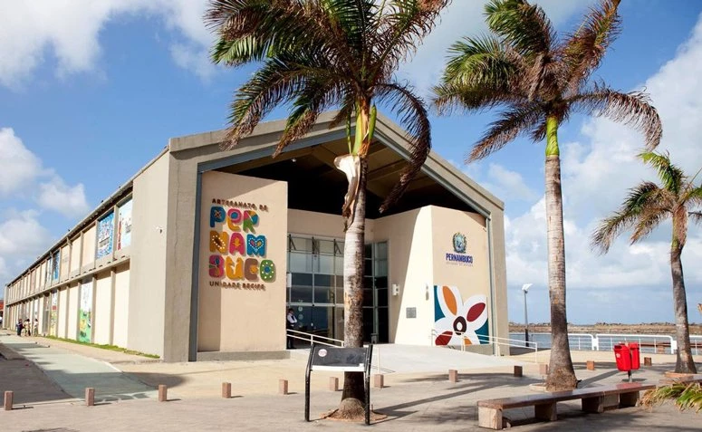

Parque das Esculturas Francisco Brennand
Uma instalação a céu aberto sobre o molhe do porto, composta por 90 obras do artista plástico Francisco Brennand, inaugurada em comemoração aos 500 anos do Descobrimento do Brasil. Dentre as esculturas, o destaque vai para a imponente Coluna de Cristal, que não passa despercebida com seus 32 metros de altura.
 >
>
Centro de Artesanato de Pernambuco
Centro de Artesanato é parada obrigatória para os turistas que querem levar para casa uma lembrança da viagem. A grande loja conta com mais de 25 mil peças produzidas por artesãos de todo o estado. O espaço é extremamente bem organizado e tem ambientes decorados para que o visitante possa visualizar a utilização das peças nos diversos ambientes da casa.
